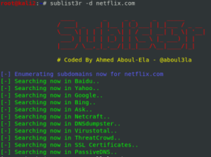

Subdomain Enumeration
With Subdomain enumeration is possible identify resources that may
contain contain:
◇ outdated vulnerable software
◇ sensitive data
◇ administrative interfaces that
are not secured
◇ ...
Comparative between subdomain enumeration tools@Six2dez1 has done a good comparative between subdomain enumeration tools.
In short subfinder is the best, followed by amass
https://six2dez.gitbook.io/pentest-book/others/subdomain-tools-review
Check also the advise of
Zseano in the chapter: →
Zseano
Methodology ←
What are Virtual HostsA virtual host is simply a website that
shares an IP address with one or more domains and subdomains.
Tools:
•
dnsdumbster:
https://dnsdumpster.com/ → collects data from
Search Engines indexing (e.g: Google, Bing, Virustotal...)
• sublist3r:
https://github.com/aboul3la/Sublist3r see this chapter
HERE
•
Amass:
see this
subchapter
HERE•
virustotal: https://www.virustotal.com/
•
crt.sh:
https://crt.sh/ →
collect SSL certificate of the domains and subdomains
•
nmap NSE ◇ script
“http-robots.txt”
To identify data found in the robots.txt file. These directories can be interesting
This page inform us that there is a
robot.txt file,
A
robots.txt file is
common on web applications. This file tells to
"web crawlers”,
which scan the internet for the various web search engines to present up-to-date search results, which paths of the
web application should not be indexed in search engine results.
Because these paths are voluntarily hidden by
developers maybe are sensitive paths that we want to check
“Disallow” instruction means that
web crawlers can not include these paths of the application in the search results
now we can save only the
paths in a file
nmap --script=http-robots.txt [server]